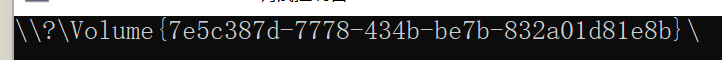
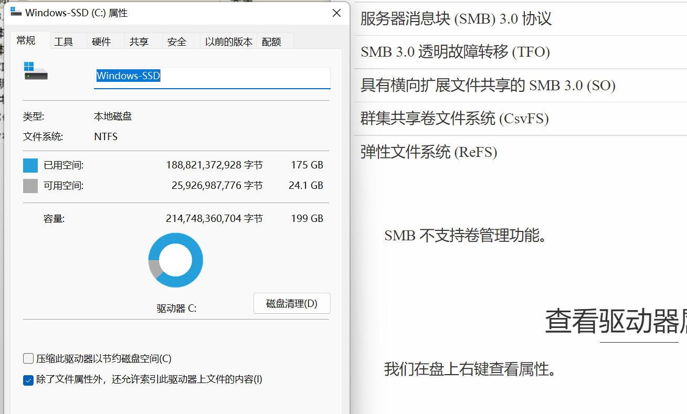

Windows-API-程序设计（5）
系统学习WindowsAPI 5函数
遍历卷 GetLogicalDriveStrings
一个卷也叫做逻辑驱动器，或者叫盘！这是一个基本的概念。
注意到它一次性返回的是若干的字字符串：
#include<Windows.h>
#include<stdio.h>
#include<stdlib.h>
#define BFSIZE 1024
int main()
{
WCHAR szLogicalDriveString[BFSIZE];
PWCHAR szDrive;
ZeroMemory(szLogicalDriveString, BFSIZE);//清空内存
szDrive = szLogicalDriveString;
GetLogicalDriveStrings(BFSIZE - 1, szLogicalDriveString);
do {
printf("%s\n", szDrive);
szDrive += (lstrlen(szDrive)+1);
} while (*szDrive != '\0');
}查看第一个卷
我们可以使用FindFirstVolume这个函数的设备名称
TCHAR buf[BFSIZE];
HANDLE hVol;
BOOL bFlag; // as to see if the function work well
hVol = FindFirstVolume(buf, BFSIZE);
if (hVol == INVALID_HANDLE_VALUE) {
wprintf(TEXT("NO... Volumn has't been find!"));
return -1;
}
printf("%ls\n", buf);
这是驱动设备的真正名称，他是唯一的标识符。
使用FindNextVolume来找到下一个：
TCHAR buf[BFSIZE];
HANDLE hVol;
BOOL bFlag; // as to see if the function work well
hVol = FindFirstVolume(buf, BFSIZE);
if (hVol == INVALID_HANDLE_VALUE) {
wprintf(TEXT("NO... Volumn has't been find!"));
return -1;
}
printf("%ls\n", buf);
while (FindNextVolume(hVol, buf, BFSIZE)) {
printf("%ls\n", buf);
}
bFlag = FindVolumeClose(hVol);
return bFlag;
Extensive Reading for Microsoft API
ZeroMemory 宏 (wdm.h)
ZeroMemory 例程使用零填充内存块，给定指向块的指针和要填充的长度（以字节为单位）。
语法
void RtlZeroMemory(
void* Destination,
size_t Length
);参数
[out] Destination指向要用零填充的内存块的指针。
[in] Length要用零填充的字节数。
返回值
无
备注
若要将内存缓冲区归零以擦除安全敏感数据，请改用SecureZeroMemory
如果目标内存块位于非分页系统内存中， ZeroMemory 的调用方可以在任何 IRQL 上运行。 否则，调用方必须在 IRQL <= APC_LEVEL 运行。
本质上
memset((Destination),0,(Length))getLogicalDriveStrings函数 (fileapi.h)
用指定系统中有效驱动器的字符串填充缓冲区。
语法
DWORD GetLogicalDriveStrings(
[in] DWORD nBufferLength,
[out] LPWSTR lpBuffer
);参数
[in] nBufferLength TCHAR 中由 lpBuffer 指向的缓冲区的最大大小。 此大小不包括终止 null 字符。 如果此参数为零，则不使用 lpBuffer 。
[out] lpBuffer 指向一个缓冲区的指针，该缓冲区接收一系列以 null 结尾的字符串，一个用于系统中每个有效驱动器，另外还有一个 null 字符。 每个字符串都是设备名称。
返回值
如果函数成功，则返回值是复制到缓冲区的字符串的长度（以字符为单位），不包括终止 null 字符。 请注意，ANSI-ASCII null 字符使用一个字节，但 Unicode (UTF-16) null 字符使用两个字节。
如果缓冲区不够大，则返回值大于 nBufferLength。 它是保存驱动器字符串所需的缓冲区大小。
如果函数失败，则返回值为零。 若要获取扩展的错误信息，请使用 GetLastError 函数。
注解
无论需要根目录（例如 GetDriveType 和 GetDiskFreeSpace 函数），缓冲区中的每个字符串都可以使用。
此函数返回全局和本地 MS-DOS 设备命名空间中的驱动器串联。 如果这两个命名空间中都存在驱动器，此函数将返回本地 MS-DOS 设备命名空间中的条目。 有关详细信息，请参阅 定义 MS DOS 设备名称。
在Windows 8和Windows Server 2012中，以下技术支持此函数。
| 技术 | 支持 |
|---|---|
| 服务器消息块 (SMB) 3.0 协议 | 否 |
| SMB 3.0 透明故障转移 (TFO) | 否 |
| 具有横向扩展文件共享的 SMB 3.0 (SO) | 否 |
| 群集共享卷文件系统 (CsvFS) | 是 |
| 弹性文件系统 (ReFS) | 是 |
SMB 不支持卷管理功能。
FindFirstVolume 函数 (fileapi.h)
检索计算机上的卷的名称。 FindFirstVolume 用于开始扫描计算机的卷。
语法
HANDLE FindFirstVolume(
[out] LPWSTR lpszVolumeName,
[in] DWORD cchBufferLength
);参数
[out] lpszVolumeName 指向接收空终止字符串的缓冲区的指针，该字符串指定找到的第一个卷的卷 GUID 路径。
[in] cchBufferLength 要在 TCHAR 中接收卷 GUID 路径的缓冲区的长度。
返回值
如果函数成功，则返回值是随后调用 FindNextVolume 和 FindVolumeClose 函数时使用的搜索句柄。
如果函数找不到任何卷，则返回值为 INVALID_HANDLE_VALUE 错误代码。 要获得更多的错误信息，请调用 GetLastError。
注解
FindFirstVolume 函数打开卷搜索句柄，并返回有关计算机上找到的第一个卷的信息。 建立搜索句柄后，可以使用 FindNextVolume 函数搜索其他卷。 不再需要搜索句柄时，请使用 FindVolumeClose 函数将其关闭。
不应假定这些函数返回的卷的顺序与计算机上的卷顺序之间存在任何关联。 具体而言，如果) 或磁盘管理员，则不要假定由 BIOS (分配的卷顺序和驱动器号之间的任何关联。
在Windows 8和Windows Server 2012中，以下技术支持此函数。
| 技术 | 支持 |
|---|---|
| 服务器消息块 (SMB) 3.0 协议 | 否 |
| SMB 3.0 透明故障转移 (TFO) | 否 |
| 具有横向扩展文件共享的 SMB 3.0 (SO) | 否 |
| 群集共享卷文件系统 (CsvFS) | 是 |
| 弹性文件系统 (ReFS) | 是 |
SMB 不支持卷管理功能。
FindNextVolume 函数 (fileapi.h)
继续通过调用 FindFirstVolume 函数开始的卷搜索。 FindNextVolume 为每个调用查找一个卷。
语法
BOOL FindNextVolume(
[in] HANDLE hFindVolume,
[out] LPWSTR lpszVolumeName,
[in] DWORD cchBufferLength
);参数
[in] hFindVolume 上一次调用 FindFirstVolume 函数返回的卷搜索句柄。
[out] lpszVolumeName 指向接收找到的卷 GUID 路径的字符串的指针。
[in] cchBufferLength 接收卷 GUID 路径的缓冲区的长度（以 TCHAR 为单位）。
返回值
如果该函数成功，则返回值为非零值。
如果函数失败，则返回值为零。 要获得更多的错误信息，请调用 GetLastError。 如果未找到匹配的文件， GetLastError 函数将返回 ERROR_NO_MORE_FILES 错误代码。 在这种情况下，请使用 FindVolumeClose 函数关闭搜索。
注解
通过调用 FindFirstVolume 建立搜索句柄后，可以使用 FindNextVolume 函数搜索其他卷。
不应假定这些函数返回的卷的顺序与计算机上的卷顺序之间存在任何关联。 具体而言，如果存在任何) 或磁盘管理员，则不要假定 BIOS (分配的卷顺序和驱动器号之间的任何关联。
在Windows 8和Windows Server 2012中，以下技术支持此函数。
| 技术 | 支持 |
|---|---|
| 服务器消息块 (SMB) 3.0 协议 | 否 |
| SMB 3.0 透明故障转移 (TFO) | 否 |
| 具有横向扩展文件共享的 SMB 3.0 (SO) | 否 |
| 群集共享卷文件系统 (CsvFS) | 是 |
| 弹性文件系统 (ReFS) | 是 |
SMB 不支持卷管理功能。
查看驱动器属性 GetDriverType && GetVolumeInformation
我们在盘上右键查看属性。

#include<Windows.h>
#include<stdio.h>
BOOL GetDriverInfo(LPSTR szDriver) {
UINT uDriverType = GetDriveType(szDriver);
printf("%u", uDriverType);
return TRUE;
}
int main()
{
GetDriverInfo(TEXT("c:\\"));
} 有自己的特殊含义！在WinBase.h文件下
#define DRIVE_UNKNOWN 0
#define DRIVE_NO_ROOT_DIR 1
#define DRIVE_REMOVABLE 2
#define DRIVE_FIXED 3
#define DRIVE_REMOTE 4
#define DRIVE_CDROM 5
#define DRIVE_RAMDISK 6 正是如此！
下面是给出详细信息的：
#include<Windows.h>
#include<stdio.h>
BOOL GetDriverInfo(LPSTR szDriver) {
UINT uDriverType = GetDriveType(szDriver);
printf("%ls,the type is %u\n",szDriver, uDriverType);
switch (uDriverType) {
case DRIVE_UNKNOWN: {
printf("can't get the driver type");
break;
}
case DRIVE_NO_ROOT_DIR: {
printf("the root path is invalid");
break;
}
case DRIVE_REMOVABLE:
{
printf("the driver can be removed!");
break;
}
case DRIVE_FIXED :
{
printf("this is a type that cannot move!");
break;
}
case DRIVE_REMOTE:
{
printf("the driver is a remote drive!");
break;
}
case DRIVE_CDROM:
{
printf("the driver is a CD-ROM!");
break;
}
case DRIVE_RAMDISK:
{
printf("The driver is a RAM disk!");
break;
}
default:
break;
}
printf("\n");
// For more Information
//
// need to get Some val
WCHAR szDriverName[MAX_PATH];
DWORD dwVolumeSerialNumber;
DWORD dwMaxComponentLength;
DWORD dwFileSystemFlags;
WCHAR szFileSystemNameBuffer[MAX_PATH];
if (!GetVolumeInformation(
szDriver,
szDriverName,
MAX_PATH,
&dwVolumeSerialNumber,
&dwMaxComponentLength,
&dwFileSystemFlags,
szFileSystemNameBuffer,
MAX_PATH
)) {
return FALSE;
}
if (lstrlen(szDriverName)) {
printf("\nDriverName is %ls\n", szDriverName);
}
printf("Volumn Serial Number is %u\n", dwVolumeSerialNumber);
printf("Maxinum Component Length is %u", dwMaxComponentLength);
printf("Systems Type:%ls", szFileSystemNameBuffer);
if (dwFileSystemFlags & FILE_VOLUME_QUOTAS) {// 可以看到这是要求位判断
printf("the file system does support the QUOTAS");
}
//...
return TRUE;
}
int main()
{
GetDriverInfo(TEXT("c:\\"));
}Extensive Reading for Microsoft API
getDriveType 函数 (fileapi.h)
确定磁盘驱动器是可移动的、固定的、CD-ROM、RAM 磁盘还是网络驱动器。
若要确定驱动器是否为 USB 类型驱动器，请调用 SetupDiGetDeviceRegistryProperty 并指定 SPDRP_REMOVAL_POLICY 属性。
语法
UINT GetDriveTypeW(
[in, optional] LPCWSTR lpRootPathName
);参数
[in, optional] lpRootPathName 驱动器的根目录。
需要尾随反斜杠。 如果此参数为 NULL，则该函数使用当前目录的根目录。
返回值
返回值指定驱动器的类型，可以是下列值之一。
| 返回代码/值 | 描述 |
|---|---|
| DRIVE_UNKNOWN0 | 无法确定驱动器类型。 |
| DRIVE_NO_ROOT_DIR1 | 根路径无效;例如，在指定路径上没有装载卷。 |
| DRIVE_REMOVABLE2 | 驱动器具有可移动媒体;例如，软盘驱动器、拇指驱动器或闪存卡读取器。 |
| DRIVE_FIXED3 | 驱动器具有固定媒体;例如，硬盘驱动器或闪存驱动器。 |
| DRIVE_REMOTE4 | 驱动器是远程 (网络) 驱动器。 |
| DRIVE_CDROM5 | 驱动器是 CD-ROM 驱动器。 |
| DRIVE_RAMDISK6 | 驱动器是一个 RAM 磁盘。 |
getVolumeInformationW 函数 (fileapi.h)
检索与指定根目录关联的文件系统和卷的相关信息。
若要在检索此信息时指定句柄，请使用 GetVolumeInformationByHandleW 函数。
若要检索文件或目录的当前压缩状态，请使用 FSCTL_GET_COMPRESSION。
语法
BOOL GetVolumeInformationW(
[in, optional] LPCWSTR lpRootPathName,
[out, optional] LPWSTR lpVolumeNameBuffer,
[in] DWORD nVolumeNameSize,
[out, optional] LPDWORD lpVolumeSerialNumber,
[out, optional] LPDWORD lpMaximumComponentLength,
[out, optional] LPDWORD lpFileSystemFlags,
[out, optional] LPWSTR lpFileSystemNameBuffer,
[in] DWORD nFileSystemNameSize
);参数
[in, optional] lpRootPathName 指向包含要描述的卷的根目录的字符串的指针。
如果此参数为 NULL，则使用当前目录的根目录。 尾随反斜杠是必需的。 例如，将 \\MyServer\MyShare 指定为“\\MyServer\MyShare\”，或将 C 驱动器指定为“C：\”。
[out, optional] lpVolumeNameBuffer 指向接收指定卷名称的缓冲区的指针。 缓冲区大小由 nVolumeNameSize 参数指定。
[in] nVolumeNameSize 卷名称缓冲区的长度（以 TCHAR 为单位）。 最大缓冲区大小为 MAX_PATH+1。
如果未提供卷名缓冲区，则忽略此参数。
[out, optional] lpVolumeSerialNumber 指向接收卷序列号的变量的指针。
如果不需要序列号，此参数可以为 NULL 。
此函数返回格式化硬盘时操作系统分配的卷序列号。 若要以编程方式获取制造商分配的硬盘序列号，请使用 Windows Management Instrumentation (WMI) Win32_PhysicalMedia 属性 SerialNumber。
[out, optional] lpMaximumComponentLength 指向变量的指针，该变量接收指定文件系统支持的文件名组件的最大长度（以 TCHAR 为单位）。
文件名组件是文件名在反斜杠之间的部分。
存储在 *lpMaximumComponentLength 指向的变量中的值用于指示指定的文件系统支持长名称。 例如，对于支持长名称的 FAT 文件系统，函数存储值 255，而不是以前的 8.3 指示器。 使用 NTFS 文件系统的系统上也支持长名称。
[out, optional] lpFileSystemFlags 指向接收与指定文件系统关联的标志的变量的指针。
此参数可以是以下一个或多个标志。 但是， FILE_FILE_COMPRESSION 和 FILE_VOL_IS_COMPRESSED 是相互排斥的。
| 值 | 含义 |
|---|---|
| FILE_CASE_SENSITIVE_SEARCH 0x00000001 | 指定的卷支持区分大小写的文件名。 |
| FILE_CASE_PRESERVED_NAMES 0x00000002 | 指定的卷支持在磁盘上放置名称时保留文件名大小写。 |
| FILE_UNICODE_ON_DISK 0x00000004 | 指定的卷支持在磁盘上显示的文件名中的 Unicode。 |
| FILE_PERSISTENT_ACLS 0x00000008 | 指定的卷保留并强制实施访问控制列表 (ACL) 。 例如，NTFS 文件系统保留并强制实施 ACL，而 FAT 文件系统则不这样做。 |
| FILE_FILE_COMPRESSION 0x00000010 | 指定的卷支持基于文件的压缩。 |
| FILE_VOLUME_QUOTAS 0x00000020 | 指定的卷支持磁盘配额。 |
| FILE_SUPPORTS_SPARSE_FILES 0x00000040 | 指定的卷支持稀疏文件。 |
| FILE_SUPPORTS_REPARSE_POINTS 0x00000080 | 指定的卷支持重新分析点。 裁判： ReFS 支持重新分析点，但不对其进行索引，因此 FindFirstVolumeMountPoint 和 FindNextVolumeMountPoint 将无法按预期工作。 |
| FILE_SUPPORTS_REMOTE_STORAGE 0x00000100 | 文件系统支持远程存储。 |
| FILE_RETURNS_CLEANUP_RESULT_INFO 0x00000200 | 成功执行清理操作后，文件系统将返回描述清理期间执行的其他操作的信息，例如删除文件。 文件系统筛选器可以在清理后回调中检查此信息。 |
| FILE_SUPPORTS_POSIX_UNLINK_RENAME 0x00000400 | 文件系统支持 POSIX 样式的删除和重命名操作。 |
| FILE_VOLUME_IS_COMPRESSED 0x00008000 | 指定的卷是压缩卷，例如 DoubleSpace 卷。 |
| FILE_SUPPORTS_OBJECT_IDS 0x00010000 | 指定的卷支持对象标识符。 |
| FILE_SUPPORTS_ENCRYPTION 0x00020000 | 指定的卷支持 EFS) 加密文件系统 (。 有关详细信息，请参阅 文件加密。 |
| FILE_NAMED_STREAMS 0x00040000 | 指定的卷支持命名流。 |
| FILE_READ_ONLY_VOLUME 0x00080000 | 指定的卷是只读的。 |
| FILE_SEQUENTIAL_WRITE_ONCE 0x00100000 | 指定的卷支持单个顺序写入。 |
| FILE_SUPPORTS_TRANSACTIONS 0x00200000 | 指定的卷支持事务。 有关详细信息，请参阅 关于 KTM。 |
| FILE_SUPPORTS_HARD_LINKS 0x00400000 | 指定的卷支持硬链接。 有关详细信息，请参阅 硬链接和交接点。 Windows Server 2008、Windows Vista、Windows Server 2003 和 Windows XP： 在 Windows Server 2008 R2 和 Windows 7 之前不支持此值。 |
| FILE_SUPPORTS_EXTENDED_ATTRIBUTES 0x00800000 | 指定的卷支持扩展属性。 扩展属性是应用程序特定的元数据片段，应用程序可与文件关联，并且不属于文件数据。 Windows Server 2008、Windows Vista、Windows Server 2003 和 Windows XP： 在 Windows Server 2008 R2 和 Windows 7 之前，不支持此值。 |
| FILE_SUPPORTS_OPEN_BY_FILE_ID 0x01000000 | 文件系统支持通过 FileID 打开。 有关详细信息，请参阅 FILE_ID_BOTH_DIR_INFO。 Windows Server 2008、Windows Vista、Windows Server 2003 和 Windows XP： 在 Windows Server 2008 R2 和 Windows 7 之前，不支持此值。 |
| FILE_SUPPORTS_USN_JOURNAL 0x02000000 | 指定的卷支持更新序列号 (USN) 日志。 有关详细信息，请参阅 更改日记记录。 Windows Server 2008、Windows Vista、Windows Server 2003 和 Windows XP： 在 Windows Server 2008 R2 和 Windows 7 之前，不支持此值。 |
| FILE_SUPPORTS_INTEGRITY_STREAMS 0x04000000 | 文件系统支持 完整性流。 |
| FILE_SUPPORTS_BLOCK_REFCOUNTING 0x08000000 | 指定的卷支持在同一卷上的文件之间共享逻辑群集。 文件系统在写入共享群集时重新分配。 指示 FSCTL_DUPLICATE_EXTENTS_TO_FILE 是受支持的操作。 |
| FILE_SUPPORTS_SPARSE_VDL 0x10000000 | 文件系统跟踪文件的每个群集是否包含来自显式文件写入或自动零的有效数据 () 或无效数据 (尚未写入或归零) 。 使用稀疏的有效数据长度 (VDL) 的文件系统不会存储有效的数据长度，也不需要有效数据在文件中连续。 |
| FILE_DAX_VOLUME 0x20000000 | 指定的卷是 DAX) 卷 (直接访问。 注意：此标志是在 Windows 10 版本 1607 中引入的。 |
| FILE_SUPPORTS_GHOSTING 0x40000000 | 文件系统支持重影。 |
[out, optional] lpFileSystemNameBuffer 指向接收文件系统名称的缓冲区的指针，例如 FAT 文件系统或 NTFS 文件系统。 缓冲区大小由 nFileSystemNameSize 参数指定。
[in] nFileSystemNameSize 文件系统名称缓冲区的长度（以 TCHAR 为单位）。 最大缓冲区大小为 MAX_PATH+1。
如果未提供文件系统名称缓冲区，则忽略此参数。
返回值
如果检索了所有请求的信息，则返回值为非零值。
如果未检索所有请求的信息，则返回值为零。 要获得更多的错误信息，请调用 GetLastError。
注解
当用户尝试获取有关没有软盘的软盘驱动器或没有光盘的 CD-ROM 驱动器的信息时，系统会显示一个消息框，供用户分别插入软盘或光盘。 若要防止系统显示此消息框，请使用 SEM_FAILCRITICALERRORS调用 SetErrorMode 函数。
FILE_VOL_IS_COMPRESSED标志是基于卷的压缩的唯一指示器。 文件系统名称不会更改以指示压缩，例如，此标志在 DoubleSpace 卷上返回设置。 如果压缩是基于卷的，则会压缩或未压缩整个卷。
FILE_FILE_COMPRESSION标志指示文件系统是否支持基于文件的压缩。 当压缩基于文件时，可以压缩或不压缩单个文件。
FILE_FILE_COMPRESSION和FILE_VOL_IS_COMPRESSED标志互斥。 不能设置这两个位。
存储在 lpMaximumComponentLength 中的最大组件长度值是唯一指示卷支持长于正常 FAT 文件系统 (或其他文件系统) 文件名。 不会更改文件系统名称以指示对长文件名的支持。
GetCompressedFileSize 函数获取文件的压缩大小。 GetFileAttributes 函数可以确定是否压缩单个文件。
符号链接行为
如果路径指向符号链接，则 函数将返回目标的卷信息。
从Windows 8和Windows Server 2012开始，以下技术支持此函数。
| 技术 | 支持 |
|---|---|
| 服务器消息块 (SMB) 3.0 协议 | 否 |
| SMB 3.0 透明故障转移 (TFO) | 否 |
| 具有横向扩展文件共享的 SMB 3.0 (SO) | 否 |
| 群集共享卷文件系统 (CsvFS) | 是 |
| 弹性文件系统 (ReFS) | 是 |
SMB 不支持卷管理功能。
事务处理操作
如果卷支持文件系统事务，则函数返回 lpFileSystemFlags 中的FILE_SUPPORTS_TRANSACTIONS。
备注
标头 fileapi.h 将 GetVolumeInformation 定义为别名，该别名根据 UNICODE 预处理器常量的定义自动选择此函数的 ANSI 或 Unicode 版本。 将非特定编码别名的使用与非非特定编码的代码混合使用可能会导致不匹配，从而导致编译或运行时错误。 有关详细信息，请参阅 函数原型的约定